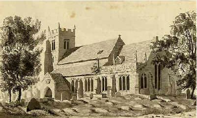

Lloyd
Surname Origin: comes from the Welsh 'llwyd' meaning "Grey, hoary"

19th century distribution of the the Lloyd surname
Our Lloyd's originate in Worcestershire with the birth in 1780 of Richard Loyd, youngest son of William Loyd and Elizabeth Wedgeborrow. Sadly little is known about the family or how they are employed. We know the family remain in Worcestershire for a couple of generations as Richard's son, John, is born in Claines in 1804.

Claines Church
John, a blacksmith, marries Mary Ann Edwards, also of Claines, in 1830. They have five children up to 1837, all baptised in Claines. The oldest daughter being Louisa born in 1832. The family appear to move to Mansfield in Nottinghamshire in 1836 where they have a further five children. They then move to Derby by 1848 where the female members of the family find employment in the silk industry and John and Mary Ann complete their family with a further two children.
In the 1851 census Louisa Lloyd is described as "a worker in silk" and at the baptism of her child in the same year she is described as a "factory worker". Her daughter Selina is born out of wedlock to a John Moore "a fitter of Nottingham". John Moore remains a mystery despite extensive research. He did not appear to stay around and the whereabouts of Louisa, John and Selina becomes very confusing during this period. It is possible that Selina may have moved to London with her father which may explain why she described herself as a Londoner in later life. Alternatively Louisa could have moved to London whilst she was prgnant. Whichever way, we have a record of Selina's baptism in Detby but have been unable to find a record of the birth. Louisa later has a family by a William Akers and eventually takes his name.
Selina Lloyd marries John Noble on Christmas Eve 1868. After their marriage John and Selina move in with John's parents in Asgard Street, Derby, and Selina's place of birth is described as Middlesex, London. The couples marriage appears short lived as by 1881 Selina appears as a housekeeper for James Bradbury of Bridge Gate Derby, whilst John and their two children have moved to Nottingham and are living at 6 Long Stairs. Also living with them in 1881 and 1891 is Charlotte Sawler, who by 1901 is described as John's wife.
Selina then disappears again after her entry in the 1881 census.
Current Research : As well as the early Lloyds more research required to find both the birth of Selina Lloyd in about 1849. Also a record of her death has still to be traced.
<a href="http://wc.rootsweb.ancestry.com/cgi-bin/igm.cgi?op=SHOW&db=noblefamilia&recno=2185">Click here</a> for full details of our Lloyd ancestry
July 14, 2011